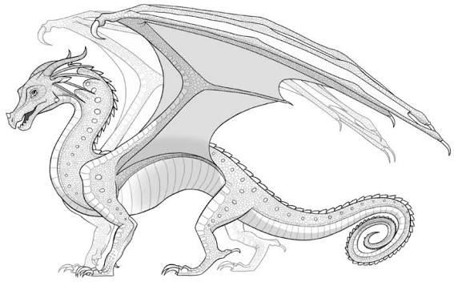
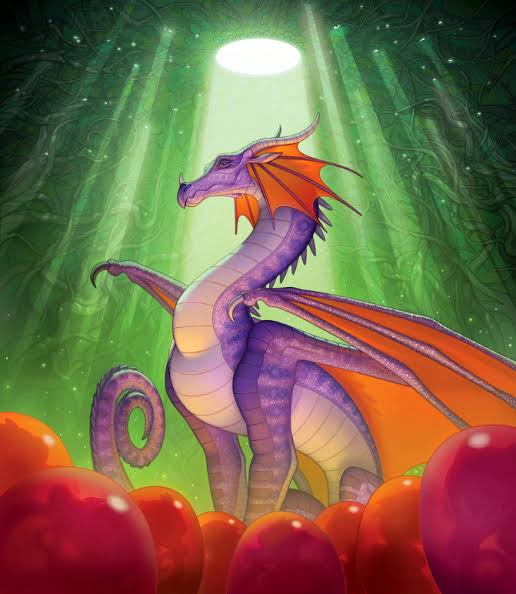
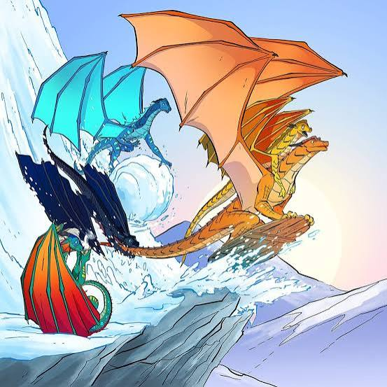
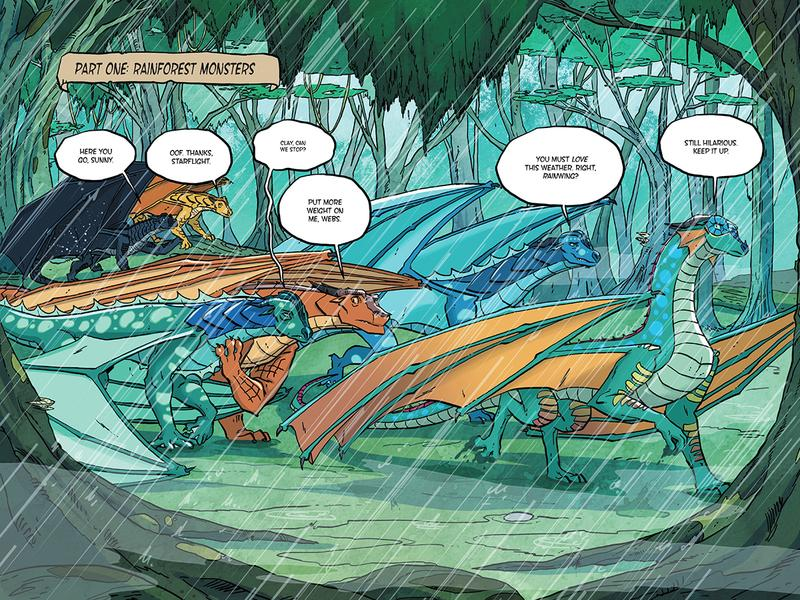
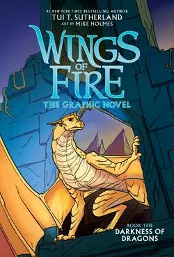
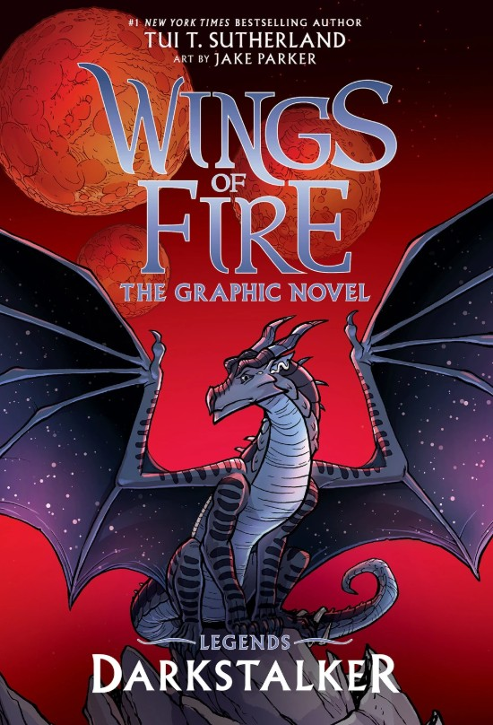
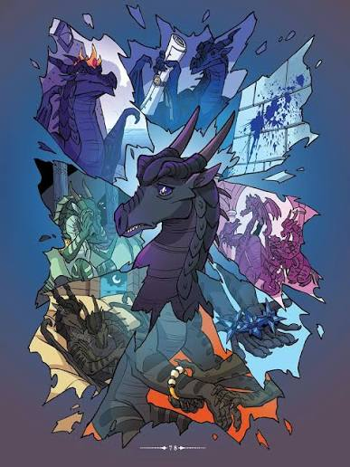
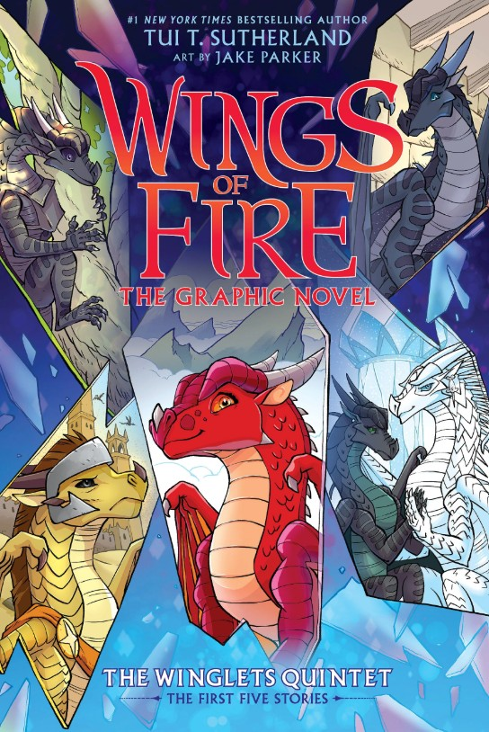

Joy Ang is the illustrator of Wings of Fire's main book covers, dragon tribe descriptions, and more. Here are a few of her pieces.


Left to Right: Book 16 Cover Art (Umber), Rainwing Base Art, Grandeur in the Rainwing Hatchery
Mike Holmes is the illustrator of Wings of Fire's main graphic novels, plus other pieces related to the graphic novels.



Left to Right: Dragonets of Destiny Art, Hidden Kingdom Graphic Novel Scene, Darkness of Dragons Graphic Novel Cover
Jake Parker is another Wings of Fire graphic novel illustrator, who is mainly focusing on books outside the main series, such as the Legends and Winglets.



Left to Right: Darkstalker Graphic Novel Cover Art, Clearsight's visions, Winglets Quintet Graphic Novel Coverr
I take no credit for the images in this website. All art on this page is by Joy Ang, Mike Holmes, and Jake Parker.